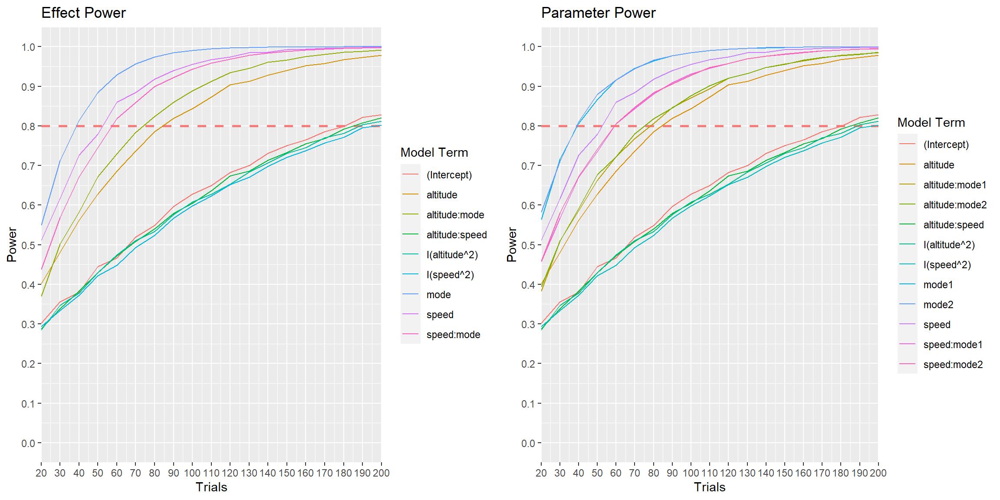
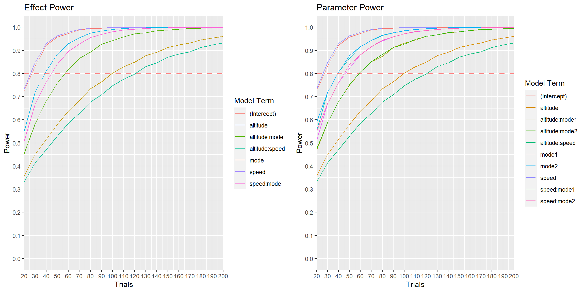
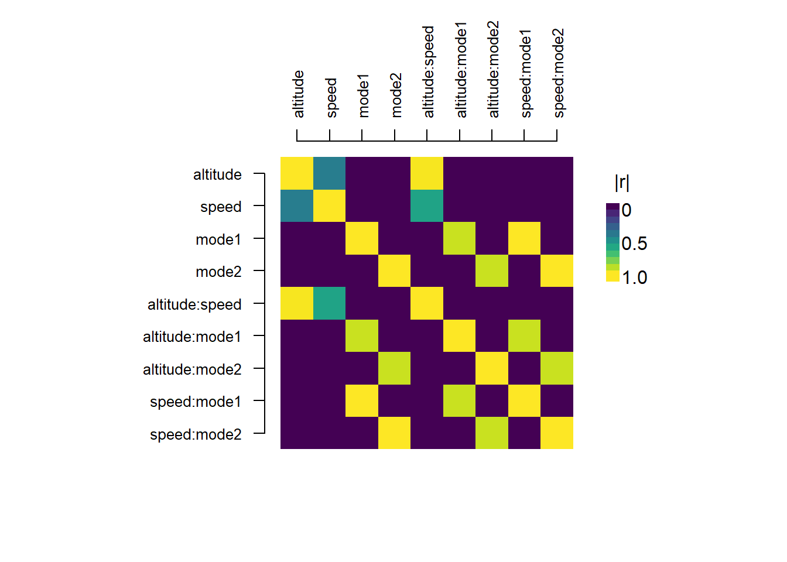
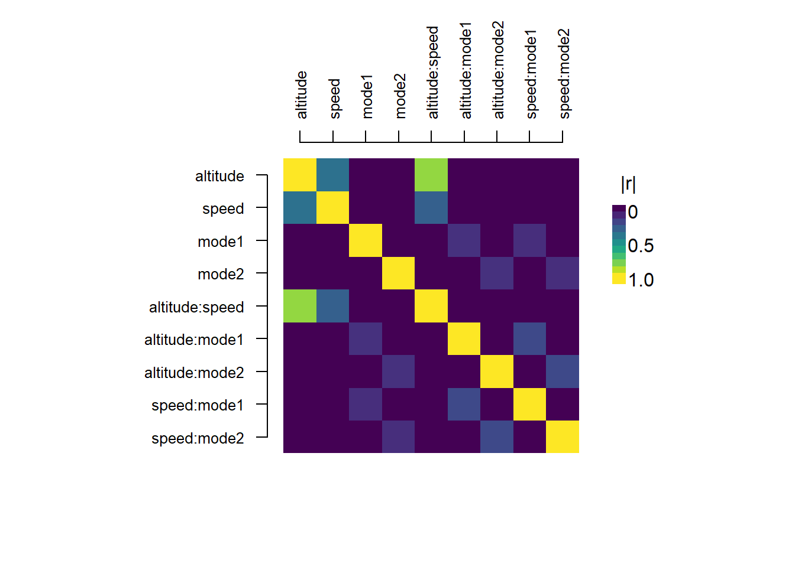
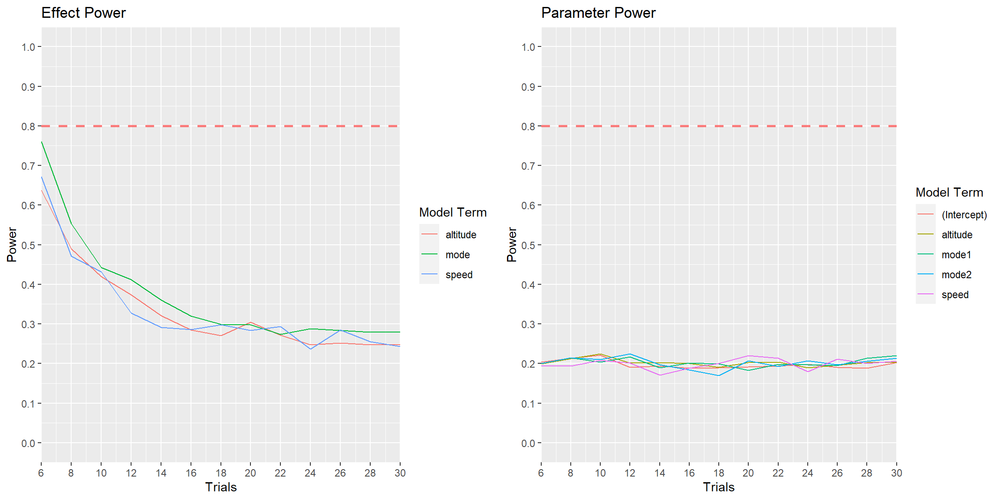
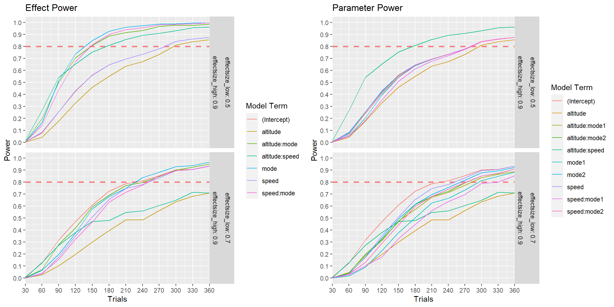

library(skpr)
library(tidyverse)
#Set default contrasts to sum contrasts
options(contrasts = rep("contr.sum", 2)) Design Evaluation
Load our libraries
Loading our design
skpr designs are R data.frames, so we can load in an external CSV file and skpr can use that as a design. We’ll also make sure our candidate set is available to generate new designs as well.
candidate_set = expand.grid(altitude = seq(10000,30000,by=1000),
speed = seq(450,550,by=5),
mode = c("scan", "strip", "spotlight"),
target_env = c("urban", "desert"))
constrained_candidate_set = candidate_set |>
filter(70000 - speed * 90 > altitude) |>
filter(-430000 + speed * 1000 > altitude) |>
filter(150000 - speed * 300 < altitude) |>
filter(-14000 + speed * 50 < altitude)
design_final = read.csv("design_final.csv")
design_final altitude speed mode
1 20000 550 scan
2 28000 460 strip
3 14000 550 scan
4 10000 470 spotlight
5 28000 460 strip
6 28000 460 spotlight
7 10000 470 scan
8 20000 550 strip
9 14000 550 scan
10 28000 460 scan
11 28000 460 strip
12 10000 470 spotlight
13 20000 550 scan
14 14000 550 strip
15 20000 550 spotlight
16 10000 470 scan
17 28000 460 spotlight
18 10000 470 strip
19 18000 450 spotlight
20 20000 550 spotlight
21 28000 460 scan
22 10000 470 spotlight
23 10000 470 strip
24 28000 460 strip
25 20000 550 scan
26 28000 460 spotlight
27 14000 550 spotlight
28 20000 550 strip
29 14000 550 scan
30 24000 510 scan
31 19000 450 strip
32 10000 470 spotlight
33 14000 550 strip
34 28000 460 scan
35 19000 450 scan
36 10000 470 scan
37 20000 550 spotlight
38 28000 460 spotlight
39 19000 450 scan
40 14000 550 spotlight
41 10000 470 strip
42 24000 510 strip
43 14000 550 strip
44 10000 470 spotlight
45 19000 450 spotlight
46 14000 550 scan
47 28000 460 strip
48 24000 510 spotlight
49 20000 550 strip
50 28000 460 scan
51 28000 460 scan
52 10000 470 scan
53 16000 450 scan
54 14000 550 spotlight
55 16000 450 spotlight
56 18000 500 spotlight
57 24000 510 scan
58 16000 450 strip
59 12000 515 scan
60 28000 460 spotlight
61 10000 470 strip
62 18000 495 scan
63 20000 550 spotlight
64 18000 500 spotlight
65 19000 450 strip
66 14000 550 strip
67 18000 495 strip
68 24000 510 strip
69 10000 470 strip
70 10000 470 scan
71 12000 515 strip
72 12000 515 spotlightLet’s first start by talking about our response variable. We are going to treat our NIIRS rating as a continuous response, and we want to characterize how that rating changes as a function of altitude, mode, and speed. Our model includes a quadratic term to see if there is any curvature present. Let’s run this power analysis with eval_design().
Our goal is 80% power in all model terms. Let’s see how we do, with the assumption that we are going to fit a linear model to the data and our design is fairly well balanced.
eval_design(design = design_final,
model = ~ (altitude + speed + mode)^2 + I(speed^2) + I(altitude^2),
alpha = 0.05,
effectsize = 2) parameter type power
1 (Intercept) effect.power 0.7672975
2 altitude effect.power 0.9713374
3 speed effect.power 0.9983038
4 mode effect.power 0.9999913
5 I(speed^2) effect.power 0.7122924
6 I(altitude^2) effect.power 0.7392905
7 altitude:speed effect.power 0.7345717
8 altitude:mode effect.power 0.9922116
9 speed:mode effect.power 0.9982285
10 (Intercept) parameter.power 0.7672975
11 altitude parameter.power 0.9713374
12 speed parameter.power 0.9983038
13 mode1 parameter.power 0.9999368
14 mode2 parameter.power 0.9999348
15 I(speed^2) parameter.power 0.7122924
16 I(altitude^2) parameter.power 0.7392905
17 altitude:speed parameter.power 0.7345717
18 altitude:mode1 parameter.power 0.9857589
19 altitude:mode2 parameter.power 0.9842852
20 speed:mode1 parameter.power 0.9953791
21 speed:mode2 parameter.power 0.9954601
==============Evaluation Info==============
* Alpha = 0.05 * Trials = 72 * Blocked = FALSE
* Evaluating Model = ~altitude + speed + mode + altitude:speed + altitude:mode + speed:mode + I(speed^2) + I(altitude^2)
* Anticipated Coefficients = c(1, 1, 1, 1, -1, 1, 1, 1, 1, -1, 1, -1)
* Contrasts = `contr.sum`
* Parameter Analysis Method = `lm(...)`
* Effect Analysis Method = `car::Anova(fit, type = "III")` Here we see our design and model, but we also have two new arguments: alpha and effectsize. alpha is the Type-I error, and effectsize is here stated as an signal to noise ratio (SNR) of 2. Let’s look at the slides for some more information on effect size.
Let’s say we know (based on previous tests) to expect an intrinsic variation of about 1 NIIRS point from run to run, independent of the experimental factors. An effect size of 2 then corresponds to being able to detect a difference of 2 NIIRS points. Let’s also say that we must confirm that our system produces images within 1 point on the NIIRS scale–our effect size should then be halved.
eval_design(design = design_final,
model = ~ (altitude + speed + mode)^2 + I(speed^2) + I(altitude^2),
alpha = 0.05,
effectsize = 1) parameter type power
1 (Intercept) effect.power 0.2698055
2 altitude effect.power 0.4883863
3 speed effect.power 0.6863168
4 mode effect.power 0.8517509
5 I(speed^2) effect.power 0.2426662
6 I(altitude^2) effect.power 0.2554208
7 altitude:speed effect.power 0.2531190
8 altitude:mode effect.power 0.5507805
9 speed:mode effect.power 0.6441155
10 (Intercept) parameter.power 0.2698055
11 altitude parameter.power 0.4883863
12 speed parameter.power 0.6863168
13 mode1 parameter.power 0.8257357
14 mode2 parameter.power 0.8247416
15 I(speed^2) parameter.power 0.2426662
16 I(altitude^2) parameter.power 0.2554208
17 altitude:speed parameter.power 0.2531190
18 altitude:mode1 parameter.power 0.5460779
19 altitude:mode2 parameter.power 0.5383437
20 speed:mode1 parameter.power 0.6262726
21 speed:mode2 parameter.power 0.6274187
==============Evaluation Info==============
* Alpha = 0.05 * Trials = 72 * Blocked = FALSE
* Evaluating Model = ~altitude + speed + mode + altitude:speed + altitude:mode + speed:mode + I(speed^2) + I(altitude^2)
* Anticipated Coefficients = c(0.500, 0.500, 0.500, 0.500, -0.500, 0.500, 0.500, 0.500, 0.500, -0.500, 0.500, -0.500)
* Contrasts = `contr.sum`
* Parameter Analysis Method = `lm(...)`
* Effect Analysis Method = `car::Anova(fit, type = "III")` Here, let’s say our organization is willing to accept the risk that we call the system effective at 80% confidence instead of 95%: This means we will set our alpha to 0.2. This change (along with requiring 80% power) means we are saying we will accept either a false positive or false negative with equal probability.
eval_design(design = design_final,
model = ~ (altitude + speed + mode)^2 + I(speed^2) + I(altitude^2),
alpha = 0.2,
effectsize = 1) parameter type power
1 (Intercept) effect.power 0.5344564
2 altitude effect.power 0.7482697
3 speed effect.power 0.8824046
4 mode effect.power 0.9612043
5 I(speed^2) effect.power 0.5014520
6 I(altitude^2) effect.power 0.5171805
7 altitude:speed effect.power 0.5143710
8 altitude:mode effect.power 0.8012921
9 speed:mode effect.power 0.8617164
10 (Intercept) parameter.power 0.5344564
11 altitude parameter.power 0.7482697
12 speed parameter.power 0.8824046
13 mode1 parameter.power 0.9498182
14 mode2 parameter.power 0.9494140
15 I(speed^2) parameter.power 0.5014520
16 I(altitude^2) parameter.power 0.5171805
17 altitude:speed parameter.power 0.5143710
18 altitude:mode1 parameter.power 0.7923765
19 altitude:mode2 parameter.power 0.7867171
20 speed:mode1 parameter.power 0.8466934
21 speed:mode2 parameter.power 0.8474138
==============Evaluation Info==============
* Alpha = 0.2 * Trials = 72 * Blocked = FALSE
* Evaluating Model = ~altitude + speed + mode + altitude:speed + altitude:mode + speed:mode + I(speed^2) + I(altitude^2)
* Anticipated Coefficients = c(0.500, 0.500, 0.500, 0.500, -0.500, 0.500, 0.500, 0.500, 0.500, -0.500, 0.500, -0.500)
* Contrasts = `contr.sum`
* Parameter Analysis Method = `lm(...)`
* Effect Analysis Method = `car::Anova(fit, type = "III")` We see here we still don’t have enough power in some of the terms–let’s generate some new designs and see how many runs we need in order to reach 80% power everywhere.
set.seed(2023)
gen_design(candidateset = constrained_candidate_set,
model = ~ (altitude + speed + mode)^2 + I(speed^2) + I(altitude^2),
trials = 100) |>
eval_design(alpha=0.2, effectsize = 1) parameter type power
1 (Intercept) effect.power 0.6282153
2 altitude effect.power 0.8433387
3 speed effect.power 0.9559134
4 mode effect.power 0.9907754
5 I(speed^2) effect.power 0.5978099
6 I(altitude^2) effect.power 0.6084643
7 altitude:speed effect.power 0.6047212
8 altitude:mode effect.power 0.8891265
9 speed:mode effect.power 0.9433138
10 (Intercept) parameter.power 0.6282153
11 altitude parameter.power 0.8433387
12 speed parameter.power 0.9559134
13 mode1 parameter.power 0.9851315
14 mode2 parameter.power 0.9851012
15 I(speed^2) parameter.power 0.5978099
16 I(altitude^2) parameter.power 0.6084643
17 altitude:speed parameter.power 0.6047212
18 altitude:mode1 parameter.power 0.8761100
19 altitude:mode2 parameter.power 0.8708975
20 speed:mode1 parameter.power 0.9283013
21 speed:mode2 parameter.power 0.9312056
==============Evaluation Info==============
* Alpha = 0.2 * Trials = 100 * Blocked = FALSE
* Evaluating Model = ~altitude + speed + mode + altitude:speed + altitude:mode + speed:mode + I(speed^2) + I(altitude^2)
* Anticipated Coefficients = c(0.500, 0.500, 0.500, 0.500, -0.500, 0.500, 0.500, 0.500, 0.500, -0.500, 0.500, -0.500)
* Contrasts = `contr.sum`
* Parameter Analysis Method = `lm(...)`
* Effect Analysis Method = `car::Anova(fit, type = "III")` set.seed(2023)
gen_design(candidateset = constrained_candidate_set,
model = ~ (altitude + speed + mode)^2 + I(speed^2) + I(altitude^2),
trials = 150) |>
eval_design(alpha=0.2, effectsize = 1) parameter type power
1 (Intercept) effect.power 0.7501838
2 altitude effect.power 0.9403180
3 speed effect.power 0.9922560
4 mode effect.power 0.9993906
5 I(speed^2) effect.power 0.7211095
6 I(altitude^2) effect.power 0.7310307
7 altitude:speed effect.power 0.7330595
8 altitude:mode effect.power 0.9669516
9 speed:mode effect.power 0.9882621
10 (Intercept) parameter.power 0.7501838
11 altitude parameter.power 0.9403180
12 speed parameter.power 0.9922560
13 mode1 parameter.power 0.9983660
14 mode2 parameter.power 0.9984922
15 I(speed^2) parameter.power 0.7211095
16 I(altitude^2) parameter.power 0.7310307
17 altitude:speed parameter.power 0.7330595
18 altitude:mode1 parameter.power 0.9560368
19 altitude:mode2 parameter.power 0.9550857
20 speed:mode1 parameter.power 0.9807848
21 speed:mode2 parameter.power 0.9821939
==============Evaluation Info==============
* Alpha = 0.2 * Trials = 150 * Blocked = FALSE
* Evaluating Model = ~altitude + speed + mode + altitude:speed + altitude:mode + speed:mode + I(speed^2) + I(altitude^2)
* Anticipated Coefficients = c(0.500, 0.500, 0.500, 0.500, -0.500, 0.500, 0.500, 0.500, 0.500, -0.500, 0.500, -0.500)
* Contrasts = `contr.sum`
* Parameter Analysis Method = `lm(...)`
* Effect Analysis Method = `car::Anova(fit, type = "III")` set.seed(2023)
gen_design(candidateset = constrained_candidate_set,
model = ~ (altitude + speed + mode)^2 + I(speed^2) + I(altitude^2),
trials = 200) |>
eval_design(alpha=0.2, effectsize = 1) parameter type power
1 (Intercept) effect.power 0.8279661
2 altitude effect.power 0.9780989
3 speed effect.power 0.9984155
4 mode effect.power 0.9999690
5 I(speed^2) effect.power 0.8017438
6 I(altitude^2) effect.power 0.8120091
7 altitude:speed effect.power 0.8209540
8 altitude:mode effect.power 0.9916157
9 speed:mode effect.power 0.9978725
10 (Intercept) parameter.power 0.8279661
11 altitude parameter.power 0.9780989
12 speed parameter.power 0.9984155
13 mode1 parameter.power 0.9998473
14 mode2 parameter.power 0.9998629
15 I(speed^2) parameter.power 0.8017438
16 I(altitude^2) parameter.power 0.8120091
17 altitude:speed parameter.power 0.8209540
18 altitude:mode1 parameter.power 0.9855181
19 altitude:mode2 parameter.power 0.9860742
20 speed:mode1 parameter.power 0.9952756
21 speed:mode2 parameter.power 0.9956503
==============Evaluation Info==============
* Alpha = 0.2 * Trials = 200 * Blocked = FALSE
* Evaluating Model = ~altitude + speed + mode + altitude:speed + altitude:mode + speed:mode + I(speed^2) + I(altitude^2)
* Anticipated Coefficients = c(0.500, 0.500, 0.500, 0.500, -0.500, 0.500, 0.500, 0.500, 0.500, -0.500, 0.500, -0.500)
* Contrasts = `contr.sum`
* Parameter Analysis Method = `lm(...)`
* Effect Analysis Method = `car::Anova(fit, type = "III")` We can also include the effect of blocking terms by setting blocking = TRUE. This accounts for the split-plot structure and allows more accurate estimates of power for the hard-to-change terms, which will usually have lower power than the easy-to-change terms in the model.
htc_design = gen_design(candidateset = constrained_candidate_set,
model = ~target_env,
trials=10)
gen_design(candidateset = constrained_candidate_set,
model = ~ (altitude + speed + mode + target_env)^2 + I(speed^2) + I(altitude^2),
trials = 200, parallel = FALSE, splitplotdesign = htc_design, repeats = 1) ->
split_plot_design
#Compare estimates
eval_design(split_plot_design, alpha = 0.2, effectsize = 1) parameter type power
1 (Intercept) effect.power 0.4699707
2 altitude effect.power 0.9755689
3 speed effect.power 0.9977338
4 mode effect.power 0.9999651
5 target_env effect.power 0.5740785
6 I(speed^2) effect.power 0.7680466
7 I(altitude^2) effect.power 0.7856904
8 altitude:speed effect.power 0.8159483
9 altitude:mode effect.power 0.9930435
10 altitude:target_env effect.power 0.9999054
11 speed:mode effect.power 0.9979582
12 speed:target_env effect.power 0.9999898
13 mode:target_env effect.power 0.9999756
14 (Intercept) parameter.power 0.4699707
15 altitude parameter.power 0.9755689
16 speed parameter.power 0.9977338
17 mode1 parameter.power 0.9998445
18 mode2 parameter.power 0.9998459
19 target_env1 parameter.power 0.5740785
20 I(speed^2) parameter.power 0.7680466
21 I(altitude^2) parameter.power 0.7856904
22 altitude:speed parameter.power 0.8159483
23 altitude:mode1 parameter.power 0.9880052
24 altitude:mode2 parameter.power 0.9879377
25 altitude:target_env1 parameter.power 0.9999054
26 speed:mode1 parameter.power 0.9956841
27 speed:mode2 parameter.power 0.9956403
28 speed:target_env1 parameter.power 0.9999898
29 mode1:target_env1 parameter.power 0.9998848
30 mode2:target_env1 parameter.power 0.9998852
=================Evaluation Info=================
* Alpha = 0.2 * Trials = 200 * Blocked = TRUE
* Evaluating Model = ~altitude + speed + mode + target_env + altitude:speed + altitude:mode + altitude:target_env + speed:mode + speed:target_env + mode:target_env + I(speed^2) + I(altitude^2)
* Anticipated Coefficients = c(0.500, 0.500, 0.500, 0.500, -0.500, 0.500, 0.500, 0.500, 0.500, 0.500, -0.500, 0.500, 0.500, -0.500, 0.500, 0.500, -0.500)
* Number of Blocks = Level 1: 10
* Variance Ratios = Level 1: 1, Level 2: 1
* Contrasts = `contr.sum`
* Parameter Analysis Method = `lme4::lmer(...)`
* Effect Analysis Method = `car::Anova(fit, type = "III")` Calculate Power Curves
skpr provides an easier and more informative method of exploring power than iteratively walking though different design sizes manually: the calculate_power_curves() function. This function automatically generates an optimal design for a given candidate set and number of runs, and plots the resulting power curves across all powers and effect sizes. Let’s see it in action:
power_values = calculate_power_curves(trials = seq(10,200,by=10),
candidateset = constrained_candidate_set,
model = ~ (altitude + speed + mode)^2 + I(speed^2) + I(altitude^2),
effectsize = 1,
x_breaks = seq(10,200,by=10),
alpha = 0.2,
ggplot_elements = list(geom_hline(yintercept = 0.8,
alpha = 0.5,
linetype = "dashed",
color = "red",
linewidth = 1)))
This graph tells us a great deal about our test resource/model-complexity trade space: the two clustered groups of power curves delineates a clear decision we can make regarding resource allocation. If we aren’t actually interested in modelling curvature, we will have 80% power in all main effect terms and all interactions except altitude:speed at about 90 runs. Otherwise, we need to more than double our test resources to 200 runs to have an adequate test. Is 2x the number of experimental runs worth modeling curvature? Let’s say we have theoretical or historical justification that says it isn’t, and re-run our analysis with a smaller model.
power_values = calculate_power_curves(trials = seq(10,200,by=10),
candidateset = constrained_candidate_set,
model = ~ (altitude + speed + mode)^2,
effectsize = 1,
x_breaks = seq(10,200,by=10),
alpha = 0.2,
ggplot_elements = list(geom_hline(yintercept = 0.8,
alpha = 0.5,
linetype = "dashed",
color = "red",
linewidth = 1)))
We now see we need about 120 runs to have a well-powered test for all main effects and interactions. Note that by removing the quadratic terms, the number of runs to estimate the altitude:speed interaction decreased greatly, from 200 to 120 runs. This shows that small changes to the model can have dramatic effects on power, even when you’re dealing with a relatively large test.
You might have also noticed we have two different types of powers reported: “effect.power” and “parameter.power”. What’s the difference? Let’s see the slides.
To better explain this, let’s make up some fake results for our test and simulate conducting an analysis to demonstrate in real-world terms what these types of power are actually referring to. We’ll generate some fake data and fit a linear model (using lm()) and . For both parameter and effect power, we need to specify a model: here, we’ll include all main effects and 2nd order interactions. Since we’re including interactions in our model, we should normalize the numeric terms in our model to -1 to 1, which helps prevent correlation between terms. We can do this with the skpr helper function normalize_design().
set.seed(123)
design_90runs = gen_design(candidateset = constrained_candidate_set,
model = ~ (altitude + speed + mode)^2,
trials = 72)
eval_design(design_90runs, effectsize = 1, alpha=0.2) parameter type power
1 (Intercept) effect.power 0.9883613
2 altitude effect.power 0.7050435
3 speed effect.power 0.9913139
4 mode effect.power 0.9622582
5 altitude:speed effect.power 0.6500264
6 altitude:mode effect.power 0.8670089
7 speed:mode effect.power 0.9380883
8 (Intercept) parameter.power 0.9883613
9 altitude parameter.power 0.7050435
10 speed parameter.power 0.9913139
11 mode1 parameter.power 0.9506650
12 mode2 parameter.power 0.9506650
13 altitude:speed parameter.power 0.6500264
14 altitude:mode1 parameter.power 0.8522629
15 altitude:mode2 parameter.power 0.8522629
16 speed:mode1 parameter.power 0.9243885
17 speed:mode2 parameter.power 0.9243885
==============Evaluation Info==============
* Alpha = 0.2 * Trials = 72 * Blocked = FALSE
* Evaluating Model = ~altitude + speed + mode + altitude:speed + altitude:mode + speed:mode
* Anticipated Coefficients = c(0.500, 0.500, 0.500, 0.500, -0.500, 0.500, 0.500, -0.500, 0.500, -0.500)
* Contrasts = `contr.sum`
* Parameter Analysis Method = `lm(...)`
* Effect Analysis Method = `car::Anova(fit, type = "III")` #Note the dramatic improvement in correlation when you standardize the numeric columns
plot_correlations(design_90runs, standardize = FALSE)
plot_correlations(design_90runs)
#So we will always normalize
simulated_results_design = normalize_design(design_90runs)
set.seed(123)
#Create fake NIIRS results (where null hypothesis is true--no factor influences the response)
simulated_results_design$NIIRS = rnorm(n = nrow(design_90runs), sd = 1, mean = 4)
simulated_results_design altitude speed mode NIIRS
1 -0.5555556 1.0000000 scan 3.439524
2 1.0000000 -1.0000000 scan 3.769823
3 -0.5555556 1.0000000 spotlight 5.558708
4 1.0000000 -1.0000000 spotlight 4.070508
5 -0.5555556 1.0000000 strip 4.129288
6 0.1111111 1.0000000 strip 5.715065
7 0.1111111 1.0000000 spotlight 4.460916
8 -0.5555556 1.0000000 scan 2.734939
9 0.1111111 1.0000000 scan 3.313147
10 1.0000000 -1.0000000 scan 3.554338
11 1.0000000 -1.0000000 strip 5.224082
12 -1.0000000 -0.7777778 strip 4.359814
13 1.0000000 -1.0000000 spotlight 4.400771
14 1.0000000 -1.0000000 spotlight 4.110683
15 -0.5555556 1.0000000 spotlight 3.444159
16 -1.0000000 -0.7777778 scan 5.786913
17 -1.0000000 -0.7777778 strip 4.497850
18 -0.5555556 1.0000000 strip 2.033383
19 0.1111111 1.0000000 spotlight 4.701356
20 1.0000000 -1.0000000 scan 3.527209
21 0.1111111 1.0000000 strip 2.932176
22 1.0000000 -1.0000000 strip 3.782025
23 0.1111111 1.0000000 strip 2.973996
24 -0.5555556 1.0000000 scan 3.271109
25 -0.5555556 1.0000000 spotlight 3.374961
26 -1.0000000 -0.7777778 spotlight 2.313307
27 1.0000000 -1.0000000 spotlight 4.837787
28 -1.0000000 -0.7777778 spotlight 4.153373
29 0.1111111 1.0000000 scan 2.861863
30 1.0000000 -1.0000000 scan 5.253815
31 -0.5555556 1.0000000 strip 4.426464
32 1.0000000 -1.0000000 spotlight 3.704929
33 -1.0000000 -0.7777778 strip 4.895126
34 1.0000000 -1.0000000 strip 4.878133
35 -1.0000000 -0.7777778 scan 4.821581
36 0.1111111 1.0000000 spotlight 4.688640
37 -0.5555556 1.0000000 scan 4.553918
38 0.1111111 1.0000000 scan 3.938088
39 1.0000000 -1.0000000 strip 3.694037
40 1.0000000 -1.0000000 strip 3.619529
41 -1.0000000 -0.7777778 scan 3.305293
42 -1.0000000 -0.7777778 spotlight 3.792083
43 -1.0000000 -0.7777778 spotlight 2.734604
44 1.0000000 -1.0000000 spotlight 6.168956
45 -0.5555556 1.0000000 spotlight 5.207962
46 -0.5555556 1.0000000 strip 2.876891
47 -1.0000000 -0.7777778 strip 3.597115
48 -1.0000000 -0.7777778 strip 3.533345
49 0.1111111 1.0000000 spotlight 4.779965
50 1.0000000 -1.0000000 scan 3.916631
51 0.1111111 1.0000000 strip 4.253319
52 -1.0000000 -0.7777778 scan 3.971453
53 -1.0000000 -0.7777778 strip 3.957130
54 -0.5555556 1.0000000 scan 5.368602
55 -1.0000000 -0.7777778 spotlight 3.774229
56 0.1111111 1.0000000 scan 5.516471
57 -1.0000000 -0.7777778 spotlight 2.451247
58 1.0000000 -1.0000000 strip 4.584614
59 1.0000000 -1.0000000 scan 4.123854
60 1.0000000 -1.0000000 spotlight 4.215942
61 0.1111111 1.0000000 strip 4.379639
62 0.1111111 1.0000000 scan 3.497677
63 0.1111111 1.0000000 spotlight 3.666793
64 -1.0000000 -0.7777778 scan 2.981425
65 -0.5555556 1.0000000 spotlight 2.928209
66 1.0000000 -1.0000000 scan 4.303529
67 -1.0000000 -0.7777778 scan 4.448210
68 -0.5555556 1.0000000 strip 4.053004
69 1.0000000 -1.0000000 strip 4.922267
70 -1.0000000 -0.7777778 strip 6.050085
71 -1.0000000 -0.7777778 scan 3.508969
72 -1.0000000 -0.7777778 spotlight 1.690831lm(formula = NIIRS ~ (altitude + speed + mode)^2,
data = simulated_results_design) |>
summary()
Call:
lm(formula = NIIRS ~ (altitude + speed + mode)^2, data = simulated_results_design)
Residuals:
Min 1Q Median 3Q Max
-1.6837 -0.6327 -0.1341 0.4997 1.8692
Coefficients:
Estimate Std. Error t value Pr(>|t|)
(Intercept) 4.07767 0.12514 32.584 <2e-16 ***
altitude 0.32708 0.24444 1.338 0.1858
speed -0.01326 0.12139 -0.109 0.9133
mode1 -0.08056 0.15150 -0.532 0.5968
mode2 0.05562 0.15150 0.367 0.7148
altitude:speed 0.10071 0.26725 0.377 0.7076
altitude:mode1 -0.29413 0.19094 -1.540 0.1285
altitude:mode2 -0.23470 0.19094 -1.229 0.2236
speed:mode1 -0.10597 0.16356 -0.648 0.5194
speed:mode2 -0.29564 0.16356 -1.808 0.0755 .
---
Signif. codes: 0 '***' 0.001 '**' 0.01 '*' 0.05 '.' 0.1 ' ' 1
Residual standard error: 0.8946 on 62 degrees of freedom
Multiple R-squared: 0.2085, Adjusted R-squared: 0.09366
F-statistic: 1.815 on 9 and 62 DF, p-value: 0.08322For parameter power, we see we get p-values telling us the significance of each factor. Importantly, regression also gives us coefficients for each model term, which allows us to characterize performance across the test space and make statements like “Traveling at speed X and altitude Y decreases or increases performance by N NIIRS points”.
Effect power looks at the significance of the model terms themselves. Running an ANOVA is a subset of regression–we still fit a linear model–but ANOVA looks to see how much of the total variance is explained by each of the predictors.
#Now let's look at effect power--first, Type-III ANOVA
lm(formula = NIIRS ~ (altitude + speed + mode)^2,
data = simulated_results_design) |>
car::Anova(type = "III")Anova Table (Type III tests)
Response: NIIRS
Sum Sq Df F value Pr(>F)
(Intercept) 849.70 1 1061.6958 < 2e-16 ***
altitude 1.43 1 1.7904 0.18576
speed 0.01 1 0.0119 0.91334
mode 0.24 2 0.1482 0.86254
altitude:speed 0.11 1 0.1420 0.70757
altitude:mode 6.17 2 3.8516 0.02650 *
speed:mode 5.18 2 3.2387 0.04594 *
Residuals 49.62 62
---
Signif. codes: 0 '***' 0.001 '**' 0.01 '*' 0.05 '.' 0.1 ' ' 1Similarly, you can do a likelihood ratio test between two models (one with and one without the term in question) and see if the difference is significant.
#Example: p-value for altitude:mode is approximately 0.76--let's see what it is under a likelihood ratio test
formula_full = NIIRS ~ (altitude + speed + mode)^2
formula_reduced = NIIRS ~ (altitude + speed + mode)^2 - altitude:mode
fit_full = lm(formula = formula_full, data = simulated_results_design)
fit_reduced = lm(formula = formula_reduced, data = simulated_results_design)
#Compare the outputs of the two models
diffobj::diffPrint(summary(fit_full),summary(fit_reduced), interactive = FALSE)< summary(fit_full) > summary(fit_reduced)
@@ 1,35 @@ @@ 1,31 @@
Call: Call:
< lm(formula = formula_full, data = sim > lm(formula = formula_reduced, data =
: ulated_results_design) : simulated_results_design)
Residuals: Residuals:
Min 1Q Median 3Q Min 1Q Median 3Q
< -1.6837 -0.6327 -0.1341 0.4997 > -1.88022 -0.71321 0.03328 0.44536
Max Max
< 1.8692 > 2.18666
Coefficients: Coefficients:
Estimate Std. Error Estimate Std. Error
< (Intercept) 4.07767 0.12514 > (Intercept) 4.07767 0.13060
< altitude 0.32708 0.24444 > altitude 0.32708 0.25510
< speed -0.01326 0.12139 > speed -0.01326 0.12668
< mode1 -0.08056 0.15150 > mode1 -0.04761 0.15652
< mode2 0.05562 0.15150 > mode2 0.08191 0.15652
< altitude:speed 0.10071 0.26725 > altitude:speed 0.10071 0.27891
< altitude:mode1 -0.29413 0.19094 ~
< altitude:mode2 -0.23470 0.19094 ~
< speed:mode1 -0.10597 0.16356 > speed:mode1 -0.04985 0.16640
< speed:mode2 -0.29564 0.16356 > speed:mode2 -0.25086 0.16640
t value Pr(>|t|) t value Pr(>|t|)
< (Intercept) 32.584 <2e-16 *** > (Intercept) 31.222 <2e-16 ***
< altitude 1.338 0.1858 > altitude 1.282 0.204
< speed -0.109 0.9133 > speed -0.105 0.917
< mode1 -0.532 0.5968 > mode1 -0.304 0.762
< mode2 0.367 0.7148 > mode2 0.523 0.603
< altitude:speed 0.377 0.7076 > altitude:speed 0.361 0.719
< altitude:mode1 -1.540 0.1285 ~
< altitude:mode2 -1.229 0.2236 ~
< speed:mode1 -0.648 0.5194 > speed:mode1 -0.300 0.765
< speed:mode2 -1.808 0.0755 . > speed:mode2 -1.508 0.137
--- ---
Signif. codes: Signif. codes:
@@ 37,6 @@ @@ 33,6 @@
'.' 0.1 ' ' 1 '.' 0.1 ' ' 1
< Residual standard error: 0.8946 on 62 > Residual standard error: 0.9336 on 64
: degrees of freedom : degrees of freedom
< Multiple R-squared: 0.2085, Adjus > Multiple R-squared: 0.1102, Adjus
: ted R-squared: 0.09366 : ted R-squared: 0.01289
< F-statistic: 1.815 on 9 and 62 DF, p > F-statistic: 1.132 on 7 and 64 DF, p
: -value: 0.08322 : -value: 0.3543
lmtest::lrtest(fit_full, fit_reduced)Likelihood ratio test
Model 1: NIIRS ~ (altitude + speed + mode)^2
Model 2: NIIRS ~ (altitude + speed + mode)^2 - altitude:mode
#Df LogLik Df Chisq Pr(>Chisq)
1 11 -88.762
2 9 -92.978 -2 8.4321 0.01476 *
---
Signif. codes: 0 '***' 0.001 '**' 0.01 '*' 0.05 '.' 0.1 ' ' 1Notice we had some significant effects in both effect and parameter terms in our simulated model fit, even though we were fitting nothing but noise. Were these real, or just a result of our acceptable type-I error rate of 20%? To figure this out, we can repeat the process of fitting our design with noise and see if we end up with 20% of the runs being marked as significant by chance. We’ll do this with a simple for loop that repeatedly generates noise and fits the model and counts the number of times each term is marked as significant, and then divide this number by the total number of simulations.
lm(formula = NIIRS ~ (altitude + speed + mode)^2,
data = simulated_results_design) |>
summary() |>
coef() |>
rownames() ->
model_terms
#See model terms
model_terms [1] "(Intercept)" "altitude" "speed" "mode1"
[5] "mode2" "altitude:speed" "altitude:mode1" "altitude:mode2"
[9] "speed:mode1" "speed:mode2" is_significant = rep(0,length(model_terms))
names(is_significant) = model_terms
is_significant (Intercept) altitude speed mode1 mode2
0 0 0 0 0
altitude:speed altitude:mode1 altitude:mode2 speed:mode1 speed:mode2
0 0 0 0 0 for(i in 1:1000) {
set.seed(i)
#Create fake NIIRS results (where null hypothesis is true--no factor influences the response)
simulated_results_design$NIIRS = rnorm(n = nrow(design_90runs), sd = 1, mean = 4)
lm(formula = NIIRS ~ (altitude + speed + mode)^2,
data = simulated_results_design) |>
summary() |>
coef() ->
fit_coefficients
pvals = fit_coefficients[,4] #p-values
#Add 1 to the term if significant
is_significant = is_significant + ifelse(pvals < 0.2, 1, 0)
}
#Without normalizing to the number of runs
is_significant (Intercept) altitude speed mode1 mode2
1000 176 212 207 189
altitude:speed altitude:mode1 altitude:mode2 speed:mode1 speed:mode2
201 204 187 196 210 #Normalized
is_significant/1000 (Intercept) altitude speed mode1 mode2
1.000 0.176 0.212 0.207 0.189
altitude:speed altitude:mode1 altitude:mode2 speed:mode1 speed:mode2
0.201 0.204 0.187 0.196 0.210 We see that our model fitting process indeed marks all terms as significant about 20% of the time, as expected given our Type-I error value.
What if we actually “activated” some of these effects? We can do this by shifting the simulated resulting NIIRS score proportional to the factors in the design matrix. Since the design is coded from -1 to 1 (a width of 2), we’ll set the coefficients for speed, altitude, and the interaction between speed and altitude to 0.5 to get an effect size of 1. This means that when the altitude, speed, and altitude:speed is at their highest values, we will see a shift of 1 NIIRS point compared to when they are at their lowest.
set.seed(143)
#Create fake NIIRS results (where altitude and speed and altitude:speed are active effects)
simulated_results_design$NIIRS = rnorm(n = nrow(design_90runs), sd = 1, mean = 4) +
0.5 * simulated_results_design$altitude +
0.5 * simulated_results_design$speed +
0.5 * (simulated_results_design$speed * simulated_results_design$altitude)
lm(formula = NIIRS ~ (altitude + speed + mode)^2,
data = simulated_results_design) |>
summary()
Call:
lm(formula = NIIRS ~ (altitude + speed + mode)^2, data = simulated_results_design)
Residuals:
Min 1Q Median 3Q Max
-1.84344 -0.83847 0.05234 0.79814 2.19733
Coefficients:
Estimate Std. Error t value Pr(>|t|)
(Intercept) 4.27792 0.14735 29.032 < 2e-16 ***
altitude 0.89446 0.28782 3.108 0.00284 **
speed 0.59914 0.14293 4.192 8.93e-05 ***
mode1 0.25154 0.17838 1.410 0.16350
mode2 -0.17044 0.17838 -0.955 0.34305
altitude:speed 0.80582 0.31468 2.561 0.01289 *
altitude:mode1 -0.08552 0.22482 -0.380 0.70493
altitude:mode2 0.08892 0.22482 0.396 0.69382
speed:mode1 -0.06349 0.19258 -0.330 0.74276
speed:mode2 0.10190 0.19258 0.529 0.59861
---
Signif. codes: 0 '***' 0.001 '**' 0.01 '*' 0.05 '.' 0.1 ' ' 1
Residual standard error: 1.053 on 62 degrees of freedom
Multiple R-squared: 0.2724, Adjusted R-squared: 0.1668
F-statistic: 2.579 on 9 and 62 DF, p-value: 0.01364After analyzing the data, we see all the terms were indeed marked as significant! To see if this was just a fluke, let’s repeat the process like we did before with new sets of noise.
options(contrasts = rep("contr.sum", 2))
lm(formula = NIIRS ~ (altitude + speed + mode)^2,
data = simulated_results_design) |>
summary() |>
coef() |>
rownames() ->
model_terms
is_significant = rep(0,length(model_terms))
names(is_significant) = model_terms
for(i in 1:10000) {
set.seed(i)
#Create fake NIIRS results (where altitude and speed and altitude:speed are active effects)
simulated_results_design$NIIRS = rnorm(n = nrow(design_90runs), sd = 1, mean = 4) +
0.5 * simulated_results_design$altitude +
0.5 * simulated_results_design$speed +
0.5 * (simulated_results_design$speed * simulated_results_design$altitude)
lm(formula = NIIRS ~ (altitude + speed + mode)^2,
data = simulated_results_design) |>
summary() |>
coef() ->
fit_coefficients
pvals = fit_coefficients[,4] #p-values
is_significant = is_significant + ifelse(pvals < 0.2, 1, 0)
}
is_significant/10000 (Intercept) altitude speed mode1 mode2
1.0000 0.7069 0.9917 0.2039 0.1994
altitude:speed altitude:mode1 altitude:mode2 speed:mode1 speed:mode2
0.6493 0.1982 0.1983 0.1940 0.2033 eval_design(design_90runs, effectsize = 1, alpha=0.2) parameter type power
1 (Intercept) effect.power 0.9883613
2 altitude effect.power 0.7050435
3 speed effect.power 0.9913139
4 mode effect.power 0.9622582
5 altitude:speed effect.power 0.6500264
6 altitude:mode effect.power 0.8670089
7 speed:mode effect.power 0.9380883
8 (Intercept) parameter.power 0.9883613
9 altitude parameter.power 0.7050435
10 speed parameter.power 0.9913139
11 mode1 parameter.power 0.9506650
12 mode2 parameter.power 0.9506650
13 altitude:speed parameter.power 0.6500264
14 altitude:mode1 parameter.power 0.8522629
15 altitude:mode2 parameter.power 0.8522629
16 speed:mode1 parameter.power 0.9243885
17 speed:mode2 parameter.power 0.9243885
==============Evaluation Info==============
* Alpha = 0.2 * Trials = 72 * Blocked = FALSE
* Evaluating Model = ~altitude + speed + mode + altitude:speed + altitude:mode + speed:mode
* Anticipated Coefficients = c(0.500, 0.500, 0.500, 0.500, -0.500, 0.500, 0.500, -0.500, 0.500, -0.500)
* Contrasts = `contr.sum`
* Parameter Analysis Method = `lm(...)`
* Effect Analysis Method = `car::Anova(fit, type = "III")` Note the our simulation produced values for altitude, speed, and altitude:speed that are almost identical to the parametric power values calculated with eval_design()! And that’s because, with this simulation, power is exactly what we’ve computed; we know an effect exists and we have computed the probability that we are able to detect it with our design and analysis methods, which is the definition of statistical power. We did this with what’s called a Monte Carlo technique: we used repeated random sampling to calculate our result, rather than developing an analytic solution for power. What’s really powerful about this method is how closely linked it is with the actual analysis techniques: we are using the exact same functions to generate power estimates that we plan on using during our actual analysis. This means we have a strong justification for these numbers being accurate, and we didn’t need to make any approximations or simplifying assumptions along the way.
A Monte Carlo power interface has been implemented in skpr via the function eval_design_mc(): it automates the above process and automatically transforms your design into the correct format, runs the simulation using the specified effect size, and then fits the results depending on what type of analysis you intend on performing. Let’s check out the slides and then dive in.
Monte Carlo power evaluation
eval_design_mc() has an identical interface to eval_design(), but with additional options to support far more types of responses, designs, and analytic methods. Let’s run through an example, first starting with an identical model to eval_design().
eval_design(design = design_90runs,
model = ~ (altitude + speed + mode)^2,
alpha = 0.2,
effectsize = 1) parameter type power
1 (Intercept) effect.power 0.9883613
2 altitude effect.power 0.7050435
3 speed effect.power 0.9913139
4 mode effect.power 0.9622582
5 altitude:speed effect.power 0.6500264
6 altitude:mode effect.power 0.8670089
7 speed:mode effect.power 0.9380883
8 (Intercept) parameter.power 0.9883613
9 altitude parameter.power 0.7050435
10 speed parameter.power 0.9913139
11 mode1 parameter.power 0.9506650
12 mode2 parameter.power 0.9506650
13 altitude:speed parameter.power 0.6500264
14 altitude:mode1 parameter.power 0.8522629
15 altitude:mode2 parameter.power 0.8522629
16 speed:mode1 parameter.power 0.9243885
17 speed:mode2 parameter.power 0.9243885
==============Evaluation Info==============
* Alpha = 0.2 * Trials = 72 * Blocked = FALSE
* Evaluating Model = ~altitude + speed + mode + altitude:speed + altitude:mode + speed:mode
* Anticipated Coefficients = c(0.500, 0.500, 0.500, 0.500, -0.500, 0.500, 0.500, -0.500, 0.500, -0.500)
* Contrasts = `contr.sum`
* Parameter Analysis Method = `lm(...)`
* Effect Analysis Method = `car::Anova(fit, type = "III")` eval_design_mc(design = design_90runs,
model = ~ (altitude + speed + mode)^2,
alpha = 0.2,
effectsize = 1,
glmfamily = "gaussian",
nsim = 100) parameter type power
1 (Intercept) effect.power.mc 0.98
2 altitude effect.power.mc 0.74
3 speed effect.power.mc 0.99
4 mode effect.power.mc 0.95
5 altitude:speed effect.power.mc 0.71
6 altitude:mode effect.power.mc 0.82
7 speed:mode effect.power.mc 0.91
8 (Intercept) parameter.power.mc 0.98
9 altitude parameter.power.mc 0.74
10 speed parameter.power.mc 0.99
11 mode1 parameter.power.mc 0.93
12 mode2 parameter.power.mc 0.95
13 altitude:speed parameter.power.mc 0.71
14 altitude:mode1 parameter.power.mc 0.79
15 altitude:mode2 parameter.power.mc 0.81
16 speed:mode1 parameter.power.mc 0.89
17 speed:mode2 parameter.power.mc 0.95
=============Evaluation Info==============
* Alpha = 0.2 * Trials = 72 * Blocked = FALSE
* Evaluating Model = ~altitude + speed + mode + altitude:speed + altitude:mode + speed:mode
* Anticipated Coefficients = c(0.500, 0.500, 0.500, 0.500, -0.500, 0.500, 0.500, -0.500, 0.500, -0.500)
* Contrasts = `contr.sum`
* Parameter Analysis Method = `lm(...)`
* Effect Analysis Method = `car::Anova(fit, type = "III")` Since this is a Monte Carlo estimate of power, there is sampling error of magnitude 1/sqrt(100) = 0.1 associated with these estimates. To decrease this error, we can simply increase the number of simulations. Increasing nsim to 1000 will lower the magnitude of the error to 0.03.
eval_design_mc(design = design_90runs,
model = ~ (altitude + speed + mode)^2,
alpha = 0.2,
effectsize = 1,
glmfamily = "gaussian",
nsim = 1000) parameter type power
1 (Intercept) effect.power.mc 0.990
2 altitude effect.power.mc 0.715
3 speed effect.power.mc 0.998
4 mode effect.power.mc 0.971
5 altitude:speed effect.power.mc 0.667
6 altitude:mode effect.power.mc 0.858
7 speed:mode effect.power.mc 0.930
8 (Intercept) parameter.power.mc 0.990
9 altitude parameter.power.mc 0.715
10 speed parameter.power.mc 0.998
11 mode1 parameter.power.mc 0.965
12 mode2 parameter.power.mc 0.953
13 altitude:speed parameter.power.mc 0.667
14 altitude:mode1 parameter.power.mc 0.851
15 altitude:mode2 parameter.power.mc 0.854
16 speed:mode1 parameter.power.mc 0.927
17 speed:mode2 parameter.power.mc 0.913
=============Evaluation Info==============
* Alpha = 0.2 * Trials = 72 * Blocked = FALSE
* Evaluating Model = ~altitude + speed + mode + altitude:speed + altitude:mode + speed:mode
* Anticipated Coefficients = c(0.500, 0.500, 0.500, 0.500, -0.500, 0.500, 0.500, -0.500, 0.500, -0.500)
* Contrasts = `contr.sum`
* Parameter Analysis Method = `lm(...)`
* Effect Analysis Method = `car::Anova(fit, type = "III")` The primary utility for eval_design_mc() isn’t with normal responses, however.
If our response variable is binomial and we are evaluating a probability (such as the probability of correctly classifying an aircraft in our SAR image), we can use a generalized linear model to perform a logistic regression to estimate those probabilities directly. To estimate power for this model, we simply change glmfamily to "binomial" in eval_design_mc(), and specify our effectsize as a low and high probability. We’ll say here we are looking to detect when the probability of correctly classifying an aircraft in a SAR image changes from 0.50 to 0.90. There’s no closed-form solution for calculating this, but there are some approximate methods available. One common method is to calculate an approximate signal-to-noise ratio for the two probabilities and then perform a traditional power calculation using that SNR. How well does this work?
#Calculate SNR approximation using "logit" method
high_prob = 0.9
low_prob = 0.5
average_prob = (high_prob + low_prob)/2
delta = abs(log(low_prob/(1-low_prob)) - log(high_prob/(1-high_prob)))
noise = sqrt(average_prob/(1-average_prob))
snr_approximation = delta/noise
eval_design(design = design_90runs,
model = ~ (altitude + speed + mode)^2,
alpha = 0.2,
effectsize = snr_approximation) parameter type power
1 (Intercept) effect.power 0.9999347
2 altitude effect.power 0.9087872
3 speed effect.power 0.9999660
4 mode effect.power 0.9993413
5 altitude:speed effect.power 0.8665973
6 altitude:mode effect.power 0.9873736
7 speed:mode effect.power 0.9979037
8 (Intercept) parameter.power 0.9999347
9 altitude parameter.power 0.9087872
10 speed parameter.power 0.9999660
11 mode1 parameter.power 0.9983423
12 mode2 parameter.power 0.9983423
13 altitude:speed parameter.power 0.8665973
14 altitude:mode1 parameter.power 0.9805725
15 altitude:mode2 parameter.power 0.9805725
16 speed:mode1 parameter.power 0.9956789
17 speed:mode2 parameter.power 0.9956789
==============Evaluation Info==============
* Alpha = 0.2 * Trials = 72 * Blocked = FALSE
* Evaluating Model = ~altitude + speed + mode + altitude:speed + altitude:mode + speed:mode
* Anticipated Coefficients = c(0.719, 0.719, 0.719, 0.719, -0.719, 0.719, 0.719, -0.719, 0.719, -0.719)
* Contrasts = `contr.sum`
* Parameter Analysis Method = `lm(...)`
* Effect Analysis Method = `car::Anova(fit, type = "III")` eval_design_mc(design = design_90runs,
model = ~ (altitude + speed + mode)^2,
alpha = 0.2,
effectsize = c(0.5,0.9),
glmfamily = "binomial",
nsim = 1000)Warning in eval_design_mc(design = design_90runs, model = ~(altitude + speed +
: skpr: Partial or complete separation likely detected in the binomial Monte
Carlo simulation. Increase the number of runs in the design or decrease the
number of model parameters to improve power. parameter type power
1 (Intercept) effect.power.mc 0.172
2 altitude effect.power.mc 0.104
3 speed effect.power.mc 0.175
4 mode effect.power.mc 0.340
5 altitude:speed effect.power.mc 0.349
6 altitude:mode effect.power.mc 0.305
7 speed:mode effect.power.mc 0.265
8 (Intercept) parameter.power.mc 0.172
9 altitude parameter.power.mc 0.104
10 speed parameter.power.mc 0.175
11 mode1 parameter.power.mc 0.121
12 mode2 parameter.power.mc 0.172
13 altitude:speed parameter.power.mc 0.349
14 altitude:mode1 parameter.power.mc 0.166
15 altitude:mode2 parameter.power.mc 0.165
16 speed:mode1 parameter.power.mc 0.097
17 speed:mode2 parameter.power.mc 0.146
=============Evaluation Info==============
* Alpha = 0.2 * Trials = 72 * Blocked = FALSE
* Evaluating Model = ~altitude + speed + mode + altitude:speed + altitude:mode + speed:mode
* Anticipated Coefficients = c(1.099, 1.099, 1.099, 1.099, -1.099, 1.099, 1.099, -1.099, 1.099, -1.099)
* Contrasts = `contr.sum`
* Parameter Analysis Method = glm(..., family = "binomial")`
* Effect Analysis Method = `car::Anova(fit, type = "III")` The calculated power values don’t match. Even worse, our power values are falling below our acceptable Type-I error rate of 0.2, which suggests a more fundamental issue is at play. A warning message after eval_design_mc() gives us a clue why: “Partial or complete separation likely detected in the binomial Monte Carlo simulation. Increase the number of runs in the design or decrease the number of model parameters to improve power.” Separation is an issue you can encounter in logistic regression when your model perfectly predicts the outcome for some combination of parameters and does not converge. The approximate method does not capture problems like this: you would only know about this issue if you ran a simulation ahead of time. And since we know about it, we can : let’s add a Firth correction to the logistic regression by setting firth = TRUE, which removes the issue of separation and allows the model to converge and give us useful power estimates. Since the Firth correction is more computationally expensive, we’ll also turn on parallel processing to speed up the computation.
eval_design_mc(design = design_90runs,
model = ~ (altitude + speed + mode)^2,
alpha = 0.2,
effectsize = c(0.5,0.9),
glmfamily = "binomial",
firth = TRUE,
nsim = 1000,
parallel=TRUE) parameter type power
1 altitude effect.power.mc 0.926
2 speed effect.power.mc 0.988
3 mode effect.power.mc 0.964
4 altitude:speed effect.power.mc 0.558
5 altitude:mode effect.power.mc 0.887
6 speed:mode effect.power.mc 0.754
7 (Intercept) parameter.power.mc 0.899
8 altitude parameter.power.mc 0.857
9 speed parameter.power.mc 0.806
10 mode1 parameter.power.mc 0.675
11 mode2 parameter.power.mc 0.732
12 altitude:speed parameter.power.mc 0.733
13 altitude:mode1 parameter.power.mc 0.794
14 altitude:mode2 parameter.power.mc 0.753
15 speed:mode1 parameter.power.mc 0.742
16 speed:mode2 parameter.power.mc 0.474
=============Evaluation Info==============
* Alpha = 0.2 * Trials = 72 * Blocked = FALSE
* Evaluating Model = ~altitude + speed + mode + altitude:speed + altitude:mode + speed:mode
* Anticipated Coefficients = c(1.099, 1.099, 1.099, 1.099, -1.099, 1.099, 1.099, -1.099, 1.099, -1.099)
* Contrasts = `contr.sum`
* Parameter Analysis Method = glm(..., family = "binomial", method = mbest::firthglm.fit)`
* Effect Analysis Method = lmtest::lrtest(fit, fit_without_effect)` Now we’ve improved our power substantially, but note that it still isn’t close to the extremely optimistic power values given using the approximate method.
Checking for Type-I error inflation
Let’s say we get tasked to find the absolute bare-minimum test we could execute and still find adequate. As part of that tasking, you start playing with various design sizes, removing model terms, increasing effect sizes, and changing analysis methods to try and achieve 80% power. You discover you need at least 6 runs to fit any model, so you take that design and discover something interesting when you switch from a Type-III ANOVA to a likelihood ratio test for power evaluation:
set.seed(123)
gen_design(constrained_candidate_set, ~altitude + speed + mode, trials=6) |>
eval_design_mc(model = ~ altitude + speed + mode,
alpha=0.2,
effect_anova = TRUE,
effectsize = 2) parameter type power
1 (Intercept) effect.power.mc 0.517
2 altitude effect.power.mc 0.429
3 speed effect.power.mc 0.428
4 mode effect.power.mc 0.338
5 (Intercept) parameter.power.mc 0.517
6 altitude parameter.power.mc 0.429
7 speed parameter.power.mc 0.428
8 mode1 parameter.power.mc 0.398
9 mode2 parameter.power.mc 0.410
===========Evaluation Info============
* Alpha = 0.2 * Trials = 6 * Blocked = FALSE
* Evaluating Model = ~altitude + speed + mode
* Anticipated Coefficients = c(1, 1, 1, 1, -1)
* Contrasts = `contr.sum`
* Parameter Analysis Method = `lm(...)`
* Effect Analysis Method = `car::Anova(fit, type = "III")` set.seed(123)
#Now calculate effect power with a likelihood ratio test
gen_design(constrained_candidate_set, ~altitude + speed + mode, trials=6) |>
eval_design_mc(model = ~ altitude + speed + mode,
alpha=0.2,
effect_anova = FALSE,
effectsize = 2) parameter type power
1 altitude effect.power.mc 0.929
2 speed effect.power.mc 0.924
3 mode effect.power.mc 0.921
4 (Intercept) parameter.power.mc 0.517
5 altitude parameter.power.mc 0.429
6 speed parameter.power.mc 0.428
7 mode1 parameter.power.mc 0.398
8 mode2 parameter.power.mc 0.410
===========Evaluation Info============
* Alpha = 0.2 * Trials = 6 * Blocked = FALSE
* Evaluating Model = ~altitude + speed + mode
* Anticipated Coefficients = c(1, 1, 1, 1, -1)
* Contrasts = `contr.sum`
* Parameter Analysis Method = `lm(...)`
* Effect Analysis Method = `lmtest::lrtest(fit, fit_without_effect)` Here, we see the likelihood ratio test is giving effect power values above 90% at only 6 runs! I did mention earlier that some analytic methods are more powerful than others: is that what’s going on here? To find out, let’s do a sanity check on our Type-I error rate. As I mentioned earlier, power depends on several inputs. One of them is your Type-I error rate, which is set by the tester ahead of time. Or is it? Let’s check the Type-I error rate by setting effectsize = 0: we’re testing the power when the null hypothesis is true. We’ll do this for both the Type-III ANOVA effect power and the likelihood ratio test power calculations.
set.seed(123)
gen_design(constrained_candidate_set, ~altitude + speed + mode, trials=6) |>
eval_design_mc(model = ~ altitude + speed + mode,
alpha=0.2,
effect_anova = TRUE,
effectsize = 0) parameter type power
1 (Intercept) effect.power.mc 0.204
2 altitude effect.power.mc 0.199
3 speed effect.power.mc 0.194
4 mode effect.power.mc 0.197
5 (Intercept) parameter.power.mc 0.204
6 altitude parameter.power.mc 0.199
7 speed parameter.power.mc 0.194
8 mode1 parameter.power.mc 0.200
9 mode2 parameter.power.mc 0.200
===========Evaluation Info============
* Alpha = 0.2 * Trials = 6 * Blocked = FALSE
* Evaluating Model = ~altitude + speed + mode
* Anticipated Coefficients = c(0, 0, 0, 0, -0)
* Contrasts = `contr.sum`
* Parameter Analysis Method = `lm(...)`
* Effect Analysis Method = `car::Anova(fit, type = "III")` set.seed(123)
gen_design(constrained_candidate_set, ~altitude + speed + mode, trials=6) |>
eval_design_mc(model = ~ altitude + speed + mode,
alpha=0.2,
effect_anova = FALSE,
effectsize = 0) parameter type power
1 altitude effect.power.mc 0.638
2 speed effect.power.mc 0.672
3 mode effect.power.mc 0.760
4 (Intercept) parameter.power.mc 0.204
5 altitude parameter.power.mc 0.199
6 speed parameter.power.mc 0.194
7 mode1 parameter.power.mc 0.200
8 mode2 parameter.power.mc 0.200
===========Evaluation Info============
* Alpha = 0.2 * Trials = 6 * Blocked = FALSE
* Evaluating Model = ~altitude + speed + mode
* Anticipated Coefficients = c(0, 0, 0, 0, -0)
* Contrasts = `contr.sum`
* Parameter Analysis Method = `lm(...)`
* Effect Analysis Method = `lmtest::lrtest(fit, fit_without_effect)` Our Type-I error rate for the likelihood ratio test is close to 75%! That means that we are incorrectly calling the system effective 75% of the time–a terrible outcome. Let’s see what’s going on by plotting Type-I error as a function of sample size. We can use eval_design_mc() in calculate_power_curves() simply by specifying eval_function = "eval_design_mc" and the arguments in eval_args.
power_values = calculate_power_curves(trials = seq(6,30,by=2),
candidateset = constrained_candidate_set,
model = ~ altitude + speed + mode,
alpha = 0.2,
effectsize = 0,
eval_function = "eval_design_mc",
x_breaks = seq(6,30,by=2),
eval_args = list(nsim=1000, effect_anova = FALSE),
ggplot_elements = list(geom_hline(yintercept = 0.8,
alpha = 0.5,
linetype = "dashed",
color = "red",
linewidth = 1)))
We see at low sample sizes, we our Type-I error rate is severely inflated with the likelihood ratio test. This is because the likelihood ratio test is based on an approximation of the log-likelihood to a chi-squared distribution, and that approximation fails at low sample sizes. We can correct that in skpr by setting adjust_alpha_inflation = TRUE, which runs the simulation twice: first to calculate the empirical distribution of p-values under the null hypothesis and find the true Type-I error cutoff that corresponds to your desired Type-I error rate, and then again with the actual effect size input by the user. Let’s see how that works:
set.seed(123)
gen_design(constrained_candidate_set, ~altitude + speed + mode, trials=6) |>
eval_design_mc(model = ~ altitude + speed + mode,
alpha=0.2,
effect_anova = FALSE, adjust_alpha_inflation = TRUE,
effectsize = 0) parameter type power
1 altitude effect.power.mc 0.199
2 speed effect.power.mc 0.203
3 mode effect.power.mc 0.195
4 (Intercept) parameter.power.mc 0.199
5 altitude parameter.power.mc 0.194
6 speed parameter.power.mc 0.200
7 mode1 parameter.power.mc 0.203
8 mode2 parameter.power.mc 0.197
===========Evaluation Info============
* Alpha = 0.2 * Trials = 6 * Blocked = FALSE
* Evaluating Model = ~altitude + speed + mode
* Anticipated Coefficients = c(0, 0, 0, 0, -0)
* Contrasts = `contr.sum`
* Parameter Analysis Method = `lm(...)`
* Effect Analysis Method = `lmtest::lrtest(fit, fit_without_effect)` set.seed(123)
gen_design(constrained_candidate_set, ~altitude + speed + mode, trials=6) |>
eval_design_mc(model = ~ altitude + speed + mode,
alpha=0.2,
effect_anova = FALSE, adjust_alpha_inflation = TRUE,
effectsize = 2) parameter type power
1 altitude effect.power.mc 0.443
2 speed effect.power.mc 0.456
3 mode effect.power.mc 0.329
4 (Intercept) parameter.power.mc 0.538
5 altitude parameter.power.mc 0.432
6 speed parameter.power.mc 0.449
7 mode1 parameter.power.mc 0.390
8 mode2 parameter.power.mc 0.390
===========Evaluation Info============
* Alpha = 0.2 * Trials = 6 * Blocked = FALSE
* Evaluating Model = ~altitude + speed + mode
* Anticipated Coefficients = c(1, 1, 1, 1, -1)
* Contrasts = `contr.sum`
* Parameter Analysis Method = `lm(...)`
* Effect Analysis Method = `lmtest::lrtest(fit, fit_without_effect)` set.seed(123)
for(i in 1:100) {
gen_design(constrained_candidate_set, ~altitude + speed + mode, trials=6) |>
eval_design_mc(model = ~ altitude + speed + mode,
alpha=0.2,
effect_anova = TRUE,
effectsize = 2)
}We see when we adjust for Type-I error inflation, the power “advantage” for the likelihood ratio test disappears. Type-I error inflation occurs all the time, particularly with blocking and split-plot designs, so I recommend always checking Type-I error as part of your DOE workflow: it only takes a minute and serves as a sanity check if your numbers seem too good to be true.
Final analysis
Let’s put this all together. We decide to use a model with all interactions, and also investigate two different effect sizes for an objective and a threshold requirement. We’re doing a Monte Carlo simulation with 100 simulations and a binomial response, and we want to see at what point from 30 to 360 runs we reach 80% power for all model terms. We can do this entire analysis in a single call to calculate_power_curves().
set.seed(2023)
power_values = calculate_power_curves(trials = seq(30,360,by=30),
candidateset = constrained_candidate_set,
model = ~ (altitude + speed + mode)^2,
alpha = 0.2,
effectsize = list(c(0.5,0.9), c(0.7,0.9)),
eval_function = "eval_design_mc",
eval_args = list(nsim=1000, glmfamily = "binomial"),
x_breaks = seq(30,360,by=30),
ggplot_elements = list(geom_hline(yintercept = 0.8,
alpha = 0.5,
linetype = "dashed",
color = "red",
linewidth = 1))) 
head(power_values, 10) parameter type power trials effectsize_low
1 (Intercept) effect.power.mc 0.005 30 0.5
2 altitude effect.power.mc 0.001 30 0.5
3 speed effect.power.mc 0.003 30 0.5
4 mode effect.power.mc 0.003 30 0.5
5 altitude:speed effect.power.mc 0.014 30 0.5
6 altitude:mode effect.power.mc 0.007 30 0.5
7 speed:mode effect.power.mc 0.004 30 0.5
8 (Intercept) parameter.power.mc 0.005 30 0.5
9 altitude parameter.power.mc 0.001 30 0.5
10 speed parameter.power.mc 0.003 30 0.5
effectsize_high random_seed
1 0.9 123
2 0.9 123
3 0.9 123
4 0.9 123
5 0.9 123
6 0.9 123
7 0.9 123
8 0.9 123
9 0.9 123
10 0.9 123
Power curve generation captured the following warning/error messages:
Function | Type | N | Message
Evaluation | Warn | 24 | Message: 'skpr: Partial or complete separation likely detected in the binomial Monte Carlo simulation. Increase the number of runs in the design or decrease the number of model parameters to improve power.'This analysis shows that we would need around 300 runs at an effect size of 0.5 to 0.9 and if we wanted to be able to estimate all terms in the model with 80% power. At the objective requirement of 0.7 to 0.9, we don’t see some model terms crossing 80% power even at 360 runs.